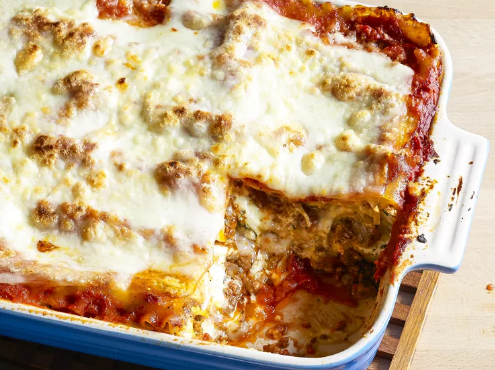

Lasagna Recipe

Description
Making lasagna can be time-consuming,
but the results are well worth the wait.
You'll find a detailed ingredient list and
step-by-step instructions in the recipe below,
but let's go over the basics:
Ingredients
- Meat: This super meaty
lasagna has sweet Italian sausage and
lean ground beef.
- Onion and Garlic: An Onion and
two cloves of garlic are cooked with the meat
to add tons of flavor.
- Tomato Products:
- Sugar:
- Spices and Seasonings:
- Lasagna Noodles:
- Cheeses:
- Egg:
Steps
- Make the meat sauce.
- Cook the nodles.
- Make the ricotta mixture.
- Layer the lasagna according to the recipe instructions.
- Cover with foil and bake.
- Let the lasagna rest before serving.